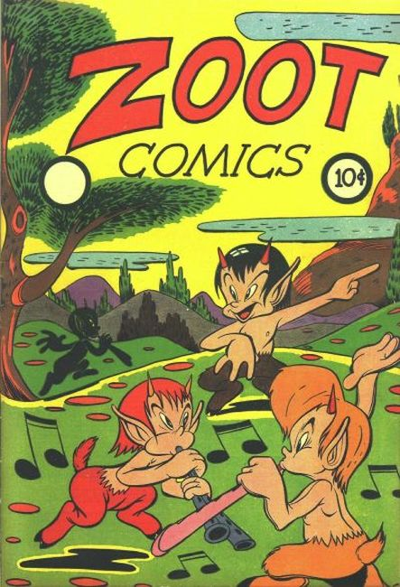

Series: 18 issues 1946 - 1948
Publisher: Fox Feature
Numbering continues with Rulah (Fox, 1948 series) #17
Kids' humor comics and funny-animal hijinks from Fox Feature Syndicate.
- A funny-animal spoof of quiz shows, with an owl as the M.C.
- Nanny and Boots are a little-girl-and-dog duo in the Buttons and Mindy mold
- Nightclub owner and amateur detective Pussy Katnip discovers that gangsters have kidnapped a baby panda from the zoo.
- Quizzo
- Nanny and Boots
- Pinky Penguin
- Timmy and Tubby
- Pussy Katnip: Orchids for Temptation
- Gussie the Gob